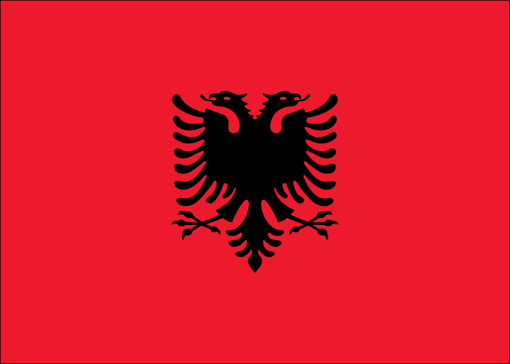

Albanien – Ein Land auf dem Balkan
Albanien liegt in Südosteuropa auf der Balkanhalbinsel und grenzt an Montenegro, Kosovo, Nordmazedonien und Griechenland.
Im Westen liegt die Adriaküste, im Südwesten das Ionische Meer. Die Hauptstadt ist Tirana.
Geografie und Klima
Albanien ist ein stark gebirgiges Land mit schönen Küstenabschnitten.
Das Klima ist mediterran an der Küste und kontinental im Landesinneren.
Geschichte und Kultur
Die Geschichte Albaniens reicht von den Illyrern über Römer bis zum Osmanischen Reich.
Traditionen, Familie und Gastfreundschaft spielen eine wichtige Rolle.
Sprache und Regionen
Die Amtssprache ist Albanisch. Es gibt regionale Unterschiede zwischen Nord- und Südalbanien.
Wirtschaft und Tourismus
Wichtige Bereiche sind Landwirtschaft, Energie und zunehmend der Tourismus.
Besonders beliebt sind Strände und historische Städte.
Fazit
Albanien ist ein vielfältiges Land mit Natur, Geschichte und wachsendem Tourismus.